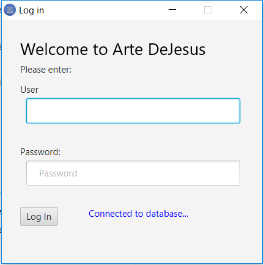
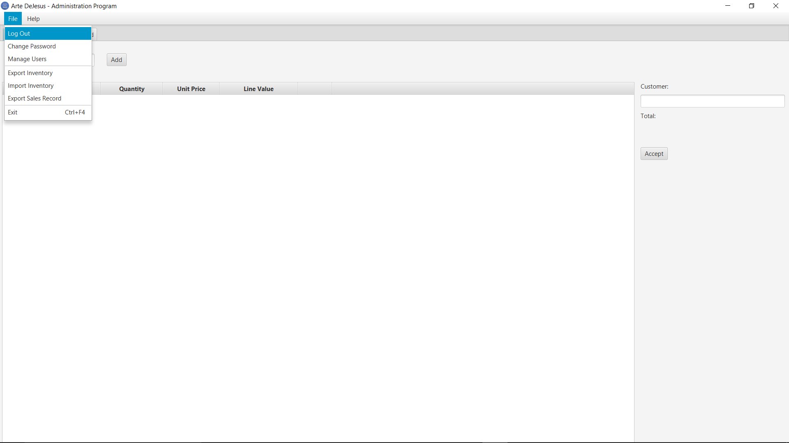
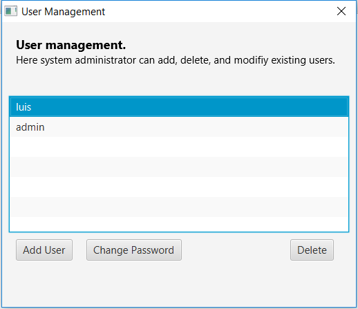
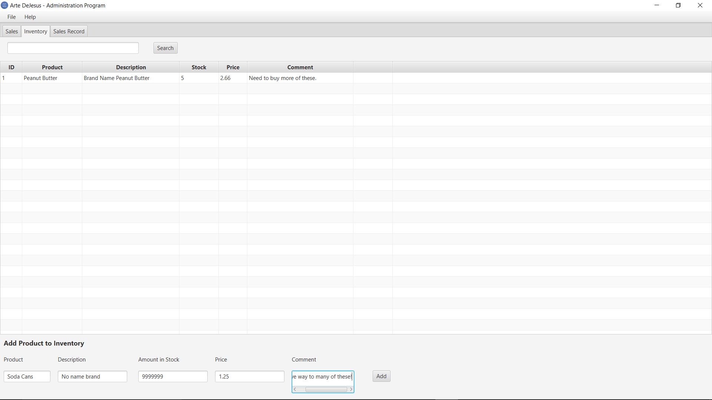
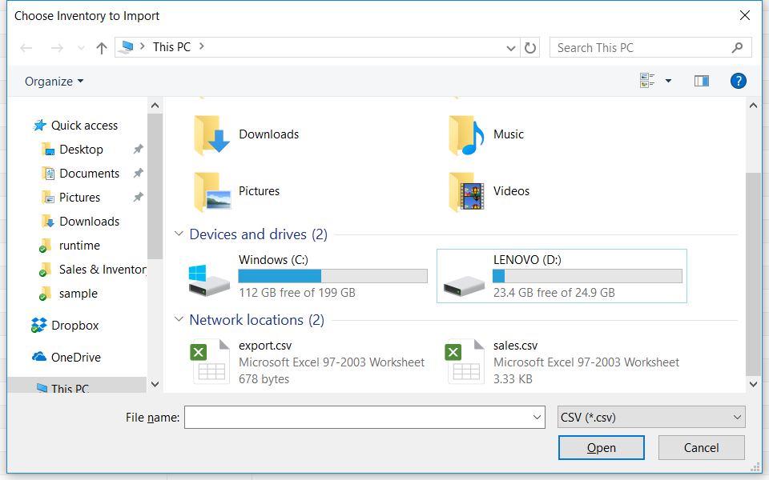
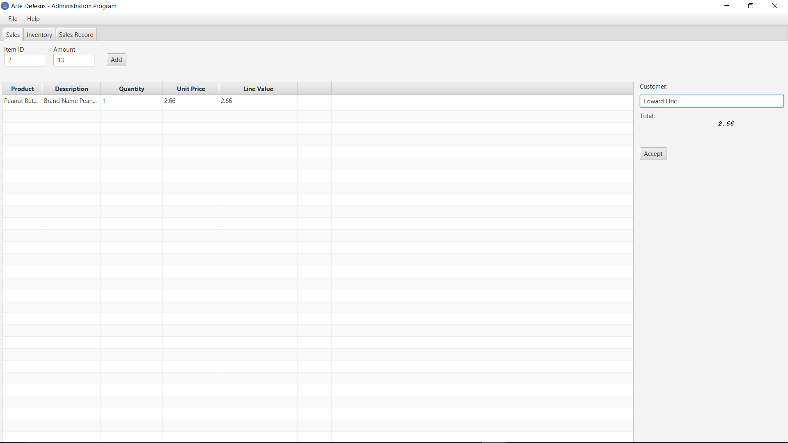
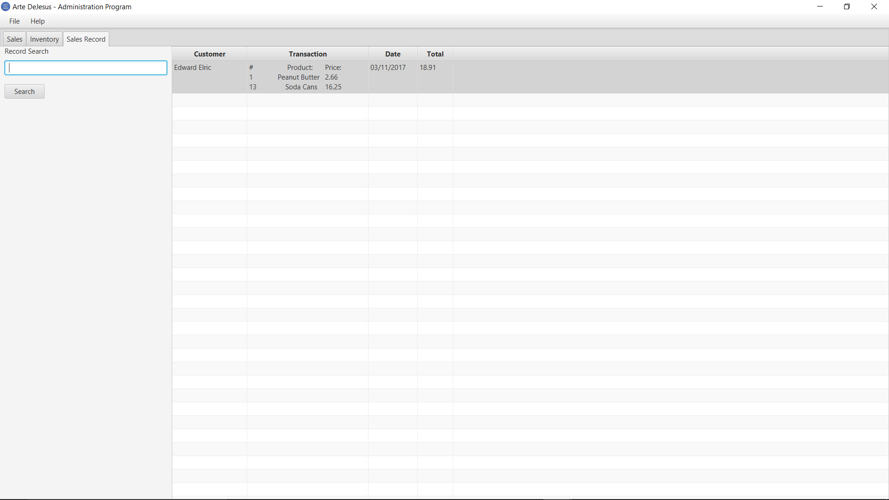
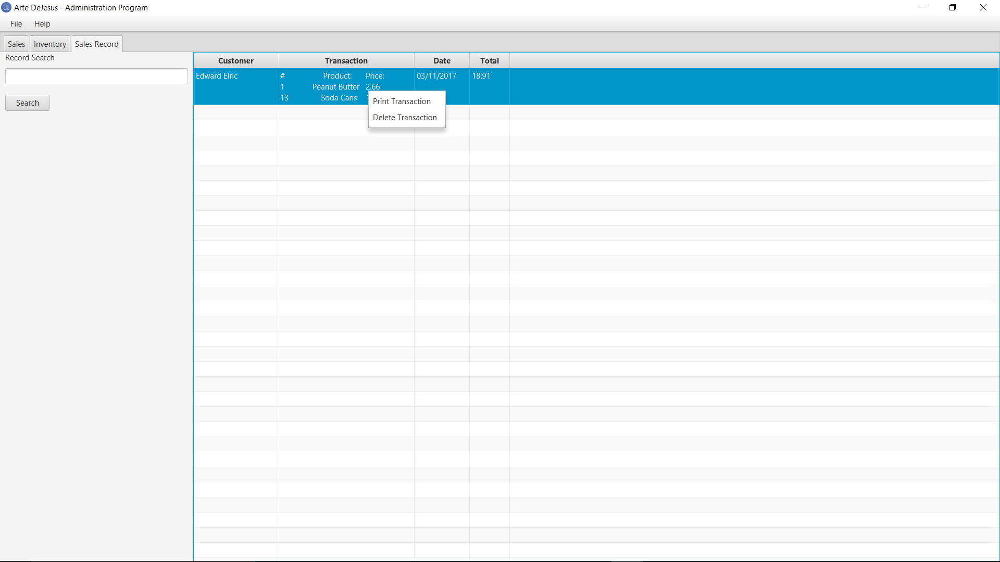

Tutorial
Log In
In order to access the Sales & Inventory program a user must first log in. By default the program contains a single user (more can be added later) called "admin". The password for admin is password. It is advised to change the password upon first use. Loging into the system is simple. Just enter the require user and password and press Log in.
Log out
Loging out is just as simple as loging in. The user must first go to File menu on the menubar. Then click logout.
Managing Users
The system's administrator can add, delete and modify existing users. This can be done by clicking the Manage Users menu item from the File menu. Note that this option is only available for the administrator. Regular users will not have access to this options.
Adding, deleting and change the passwords of users is quite straight forward.
Changing the password for the currently logged user, can be achieve from the File menu and clicking the option Change Password. These option is available for any logged user.
Inventory
The system allows the creating and management of product inventory. The inventory is meant to containa detailed list of all the products and services provided. By default the inventory comes empty. The administrator will have to create a detailed inventory and uploaded to the database. The inventory can be accessed by clicking on the Inventory tab in the main window. It can be navigated through using the keyboard arrows keys or mouse. The user can search for an specific product by typing the product name in the search text field and clicking Search.
Importing Inventory
Administrator can import a CSV file containing the inventory for the system. This file can be added to the database by going to File and selecting Import Inventory.It is important to note that importing an inventory overrides all existing inventory data and replaces it with the data contained in the CSV File.
It is important that note that the format for CSV Inventory file must follow the following headers:

Administrator can also export an existing inventory CSV file containing the inventory for the system. This file can be added to the database by going to File and selecting Export Inventory. This comes handy when preparing to upload new inventory files. User can save current inventory, add additioanl information and then reupload changes to database by importing the inventory.
Sales
Users can start new transactions/sales from the Sales tab. The sales tab relies in the inventory tab. The user will only be allow to sell services and products that are listed in the inventory. This is why a solid and detailed inventory is necessary for sales management. To fullfil a transaction the user needs to enter the Item ID (from ID column in Inventory) and the quantity of products with corresponding ID. To add the current transaction to the list/receipt, the user then clicks Add. After all serivices/products are added successfully, the user needs to enter the customer's name and Accept the transaction.
Sales Record
The sales record tab contains all previous transactions. These transactions can be exported, by goign to File menu and clicking Export Sales Record.
In order to delete or print a transaction, the user needs to right click on the transaction line from the record table, and select the desired option. Deleting transactions is only allowed to the Administrator
Business Properties
Business properties are set in $(program_root)/custom/properties.txt . This file contains the company name, contact and address. It is used in order to be displayed in the application's windows and receipts. The busines_properties.properties. file looks something like below:
BUSINESS:Sample Company
ADDRESS:742 Evergreen Terrace, Springfield.
PHONE:555-555-5555
DB_URL:[DB LOCATION]